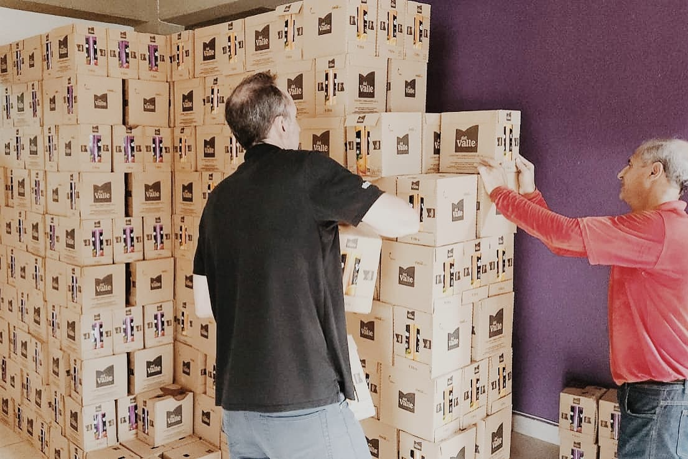

Quem estamos ajudando?
Na Ação e Cidadania – Região Metropolitana de Ribeirão Preto, sabemos que a força da solidariedade está na união de muitas mãos. Por isso, nosso trabalho de distribuição de doações alcança diversas entidades assistenciais da região que atuam diretamente no atendimento a famílias e pessoas em situação de vulnerabilidade social.
Nós temos orgulho de apoiar as seguintes instituições:
- Instituto Íris de Luz
- Cantinho do Céu – Hospital de Retaguarda
- Sociedade Espírita Allan Kardec
- Casa do Vovô
- ABRAPEC – Ribeirão Preto
- Associação Comunidade Missionária Divina Misericórdia
- Associação Espírita Casas de Betânia
- Instituição Lar do Jovem Idoso
- S.O.S – Serviço de Obras Sociais – Tambaú
- Lar São Vicente de Paulo – Altinópolis
- ACAS – Associação da Criança Abrigada Serrana
- Associação de Caridade Santa Rita de Cássia

Galeria de ações
Recebemos doações de empresas parceiras que acreditam no nosso trabalho. Elas são organizadas e distribuídas com transparência às entidades assistenciais, promovendo dignidade e transformação social.